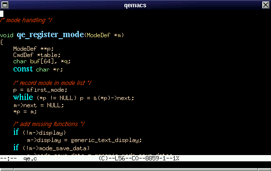

Well, not really impressive. Now since qemacs handle proportionnal fonts as your favorite word processor, we can do a little better:

But in fact qemacs is not limited to text. Let's open an HTML page with CSS2 styles:
Not a simple browser: you can modify the HTML page directly, or even work in the source and see the HTML page modified instantly:
Since QEmacs has a generic XML/CSS2 renderer, it is not limited to HTML. A simple DocBook mode is also included based on a sample CSS2 style sheet:
QEmacs has also a very complete support of UTF8. And even the most conservative people can use it since it works also on VT100 terminals:
Editing an UTF8 text on a VT100 terminal (text example from the Yudit editor)
Editing an UTF8 text with Bidirectional editing (Hebrew example from the Fribidir library )
Editing a file in hexadecimal with all the power of the QEmacs block commands: